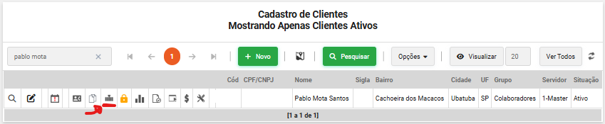
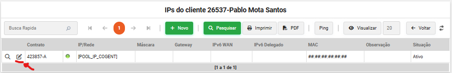
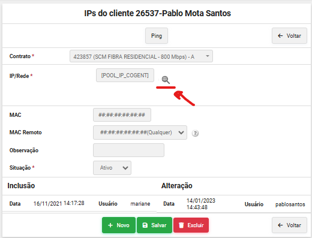
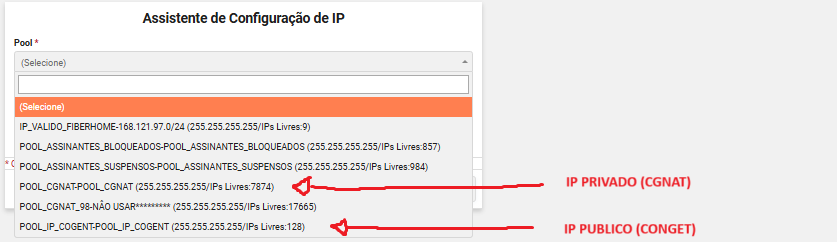
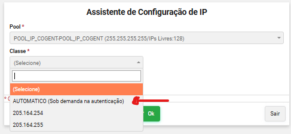
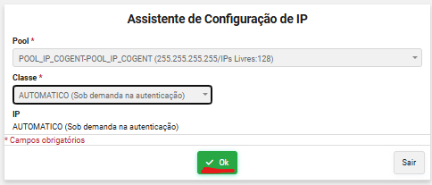
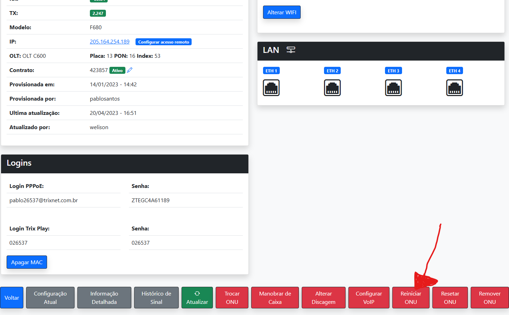

IP WAN - CAT | TrixNet
Oque é um IP WAN ?
O IP WAN (Wide Area Network) é o endereço de IP que o seu roteador recebe do provedor de internet (ISP). Ele é usado para identificar sua rede na internet e pode ser dinâmico ou estático.
Passo a passo de como alterar IP WAN
1. Acessar o RBX na area do cliente.
2. Clicar no campo IP do cliente que desejar alterar o IP WAN
3. Clicar no lapiz para editar o IP WAN do cliente
4. Clicar no Globinho para abrir a area de alteração do IP WAN
5. Nesta area, temos duas opções de IP para uso, o IP PRIVADO (CGNAT) e IP PUBLICO (CONGENT)
6. Sempre que alterar um IP, deixar como AUTOMATICO
7. Clique em OK para adicionar o IP configurado na rede do assinante
8. Para entrar em vigor o IP configurado, sempre reiniciar a ONU no TrixWatch
⚠️ Importante
Tipos de IP WAN:
IP PRIVADO DINAMICO
Um IP privado dinâmico é um endereço IP local que muda periodicamente dentro da sua rede interna.
IP PRIVADO FIXO
Um IP privado fixo (ou IP privado estático) é um endereço IP local que não muda dentro da sua rede.
IP PUBLICO DINAMICO
Um IP público dinâmico é um endereço de IP que o seu provedor de internet (ISP) atribui à sua conexão e que muda periodicamente. Esse IP é utilizado para identificar sua rede na internet e pode ser alterado a cada reconexão do roteador ou em intervalos definidos pelo provedor.
IP PUBLICO FIXO (NUNCA SELECIONAR PARA O ASSINANTE ESTE TIPO DE IP SEM AUTORIZAÇÃO DO NOC OU SUPERIORES)
Um IP público fixo (ou IP público estático) é um endereço de IP atribuído pelo seu provedor de internet (ISP) que não muda. Ele identifica sua conexão na internet e permite acessos remotos mais previsíveis.
SEMPRE QUE ADICIONAR UM IP PUBLICO AO ASSINANTE, TROCAR A SENHA DA ONU PARA NÃO RECEBER UM ATAQUE DNS
Oque é CGNAT ?
CGNAT (Carrier-Grade NAT) é uma tecnologia usada pelos provedores de internet para economizar endereços IPv4 públicos. Em vez de fornecer um IP público exclusivo para cada cliente, o provedor coloca vários clientes sob um mesmo IP compartilhado.
Porque não utilizar IP publico fixo ?
O IPv4 suporta cerca de 4,3 bilhões de endereços, mas com o crescimento da internet, eles se esgotaram. Para contornar isso, provedores adotaram CGNAT (compartilhamento de IPs) e começaram a migrar para IPv6, que tem um número praticamente infinito de endereços. No entanto, muitos sistemas ainda dependem do IPv4, dificultando a transição total.